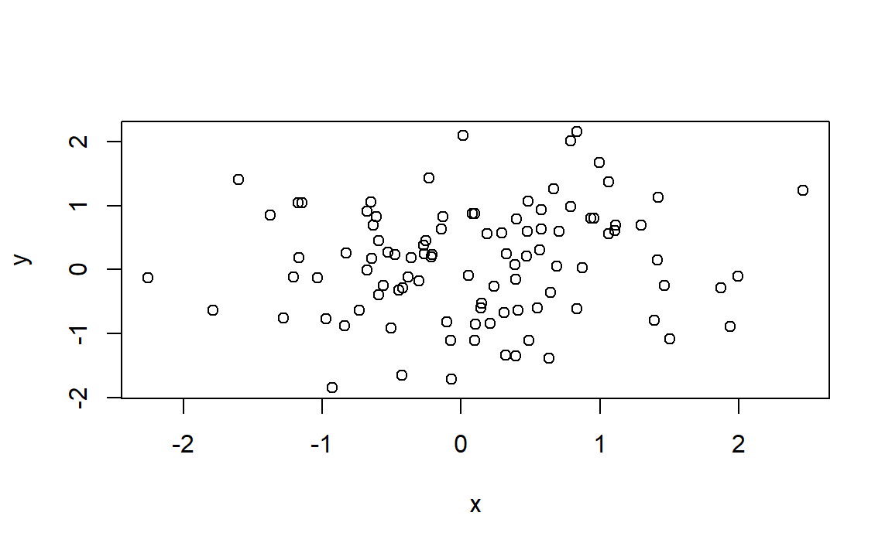
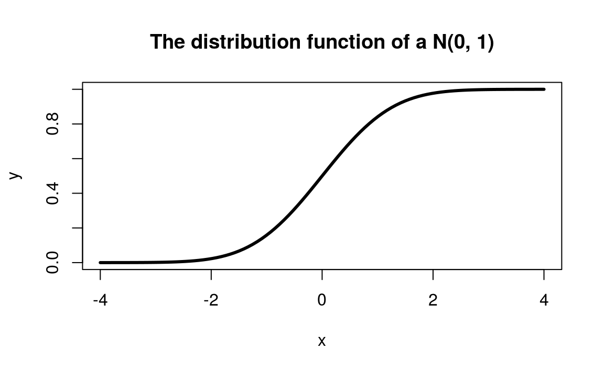
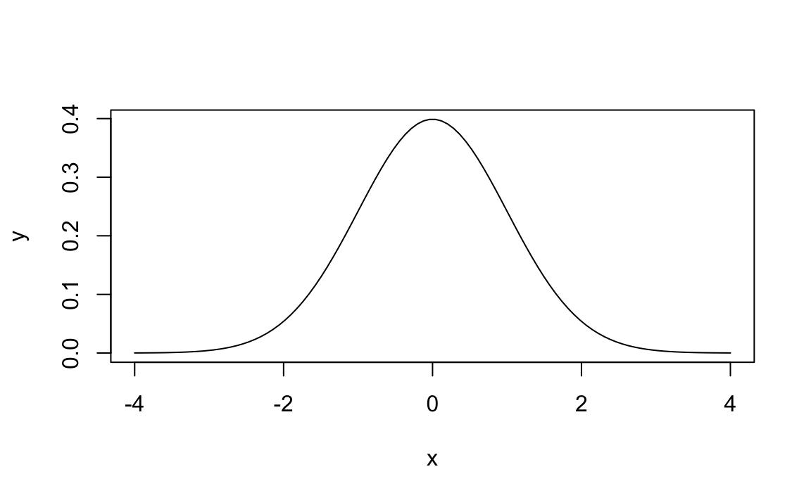
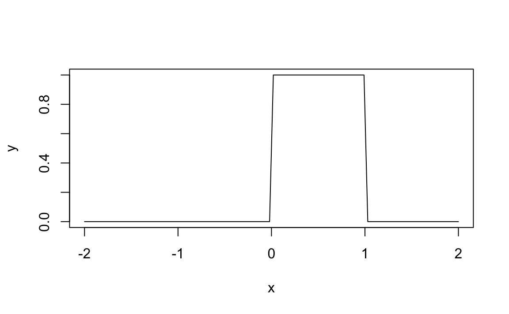
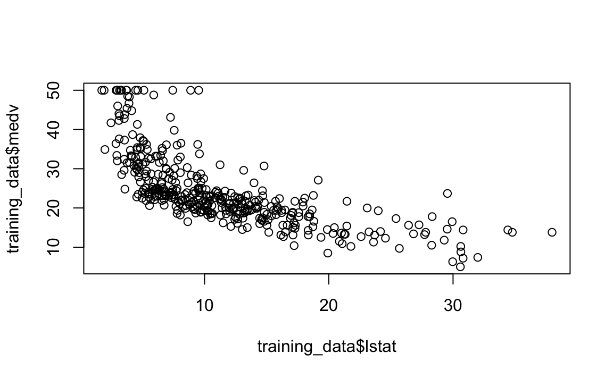
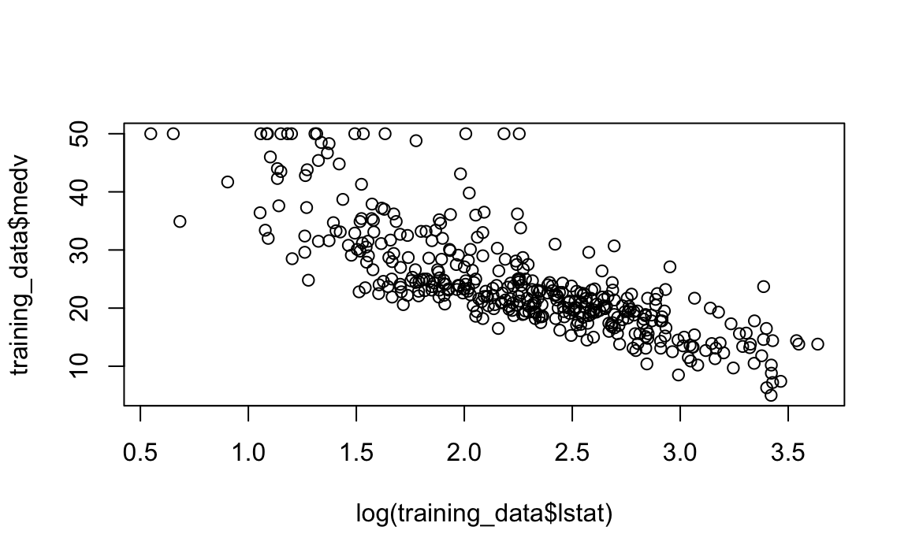
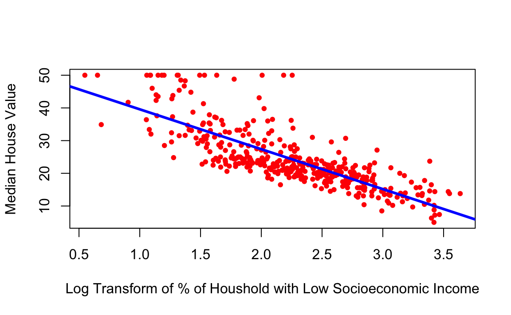

Practical Work 1
1.8 Some basics
1.8.1 Basic Commands
uses functions to perform operations. To run a function called funcname,we type funcname(input1, input2) , where the inputs (or arguments) input1 and input2 tell how to run the function. A function can have any number of inputs. For example, to create a vector of numbers, we use the function c() (for concatenate).
x <- c(1,3,2,5)
x
#ans> [1] 1 3 2 5Note that the > is not part of the command; rather, it is printed by to indicate that it is ready for another command to be entered. We can also save things using = rather than <-. Note that the answer in the code above is followed by #ans> while in the console it is not.
x = c(1,6,2)
x
#ans> [1] 1 6 2
y = c(1,4,3)
length(x)
#ans> [1] 3
length(y)
#ans> [1] 3
x+y
#ans> [1] 2 10 5Hitting the up arrow multiple times will display the previous commands, which can then be edited. This is useful since one often wishes to repeat a similar command.
The ls() function allows us to look at a list of all of the objects, such ls() as data and functions, that we have saved so far. The rm() function can be used to delete any object that we don’t want.
ls()
#ans> [1] "pdf2png" "x" "x1" "x2" "x3" "x4" "y"
rm(x)
ls()
#ans> [1] "pdf2png" "x1" "x2" "x3" "x4" "y"1.8.2 Vectors
# A handy way of creating sequences is the operator :
# Sequence from 1 to 5
1:5
#ans> [1] 1 2 3 4 5
# Storing some vectors
vec <- c(-4.12, 0, 1.1, 1, 3, 4)
vec
#ans> [1] -4.12 0.00 1.10 1.00 3.00 4.00
# Entry-wise operations
vec + 1
#ans> [1] -3.12 1.00 2.10 2.00 4.00 5.00
vec^2
#ans> [1] 16.97 0.00 1.21 1.00 9.00 16.00
# If you want to access a position of a vector, use [position]
vec[6]
#ans> [1] 4
# You also can change elements
vec[2] <- -1
vec
#ans> [1] -4.12 -1.00 1.10 1.00 3.00 4.00
# If you want to access all the elements except a position, use [-position]
vec[-2]
#ans> [1] -4.12 1.10 1.00 3.00 4.00
# Also with vectors as indexes
vec[1:2]
#ans> [1] -4.12 -1.00
# And also
vec[-c(1, 2)]
#ans> [1] 1.1 1.0 3.0 4.0Do the following:
- Create the vector \(x=(1, 7, 3, 4)\).
- Create the vector \(y=(100, 99, 98, ..., 2, 1)\).
- Compute \(x_3+y_4\) and \(\cos(x_3) + \sin(x_2) e^{-y_2}\). (Answers:
100,-0.9899925) - Set \(x_{3}=0\) and \(y_{2}=-1\). Recompute the previous expressions. (Answers:
97,2.785875) - Index \(y\) by \(x+1\) and store it as
z. What is the output? (Answer:zisc(-1, 93, 100, 96))
1.8.3 Matrices, data frames and lists
# A matrix is an array of vectors
A <- matrix(1:4, nrow = 2, ncol = 2)
A
#ans> [,1] [,2]
#ans> [1,] 1 3
#ans> [2,] 2 4
# Another matrix
B <- matrix(1:4, nrow = 2, ncol = 2, byrow = TRUE)
B
#ans> [,1] [,2]
#ans> [1,] 1 2
#ans> [2,] 3 4
# Binding by rows or columns
rbind(1:3, 4:6)
#ans> [,1] [,2] [,3]
#ans> [1,] 1 2 3
#ans> [2,] 4 5 6
cbind(1:3, 4:6)
#ans> [,1] [,2]
#ans> [1,] 1 4
#ans> [2,] 2 5
#ans> [3,] 3 6
# Entry-wise operations
A + 1
#ans> [,1] [,2]
#ans> [1,] 2 4
#ans> [2,] 3 5
A * B
#ans> [,1] [,2]
#ans> [1,] 1 6
#ans> [2,] 6 16
# Accessing elements
A[2, 1] # Element (2, 1)
#ans> [1] 2
A[1, ] # First row
#ans> [1] 1 3
A[, 2] # Second column
#ans> [1] 3 4
# A data frame is a matrix with column names
# Useful when you have multiple variables
myDf <- data.frame(var1 = 1:2, var2 = 3:4)
myDf
#ans> var1 var2
#ans> 1 1 3
#ans> 2 2 4
# You can change names
names(myDf) <- c("newname1", "newname2")
myDf
#ans> newname1 newname2
#ans> 1 1 3
#ans> 2 2 4
# The nice thing is that you can access variables by its name with the $ operator
myDf$newname1
#ans> [1] 1 2
# And create new variables also (it has to be of the same
# length as the rest of variables)
myDf$myNewVariable <- c(0, 1)
myDf
#ans> newname1 newname2 myNewVariable
#ans> 1 1 3 0
#ans> 2 2 4 1
# A list is a collection of arbitrary variables
myList <- list(vec = vec, A = A, myDf = myDf)
# Access elements by names
myList$vec
#ans> [1] -4.12 -1.00 1.10 1.00 3.00 4.00
myList$A
#ans> [,1] [,2]
#ans> [1,] 1 3
#ans> [2,] 2 4
myList$myDf
#ans> newname1 newname2 myNewVariable
#ans> 1 1 3 0
#ans> 2 2 4 1
# Reveal the structure of an object
str(myList)
#ans> List of 3
#ans> $ vec : num [1:6] -4.12 -1 1.1 1 3 4
#ans> $ A : int [1:2, 1:2] 1 2 3 4
#ans> $ myDf:'data.frame': 2 obs. of 3 variables:
#ans> ..$ newname1 : int [1:2] 1 2
#ans> ..$ newname2 : int [1:2] 3 4
#ans> ..$ myNewVariable: num [1:2] 0 1
str(myDf)
#ans> 'data.frame': 2 obs. of 3 variables:
#ans> $ newname1 : int 1 2
#ans> $ newname2 : int 3 4
#ans> $ myNewVariable: num 0 1
# A less lengthy output
names(myList)
#ans> [1] "vec" "A" "myDf"1.8.4 Graphics
The plot() function is the primary way to plot data in . For instance, plot(x,y) produces a scatterplot of the numbers in x versus the numbers in y. There are many additional options that can be passed in to the plot() function. For example, passing in the argument xlab will result in a label on the x-axis. To find out more information about the plot() function, type ?plot.
x=rnorm(100)
# The rnorm() function generates a vector of random normal variables,
# rnorm() with first argument n the sample size. Each time we call this
# function, we will get a different answer.
y=rnorm(100)
plot(x,y)
# with titles
plot(x,y,xlab="this is the x-axis",ylab="this is the y-axis",
main="Plot of X vs Y")
1.8.5 Distributions
# R allows to sample [r], compute density/probability mass [d],
# compute distribution function [p] and compute quantiles [q] for several
# continuous and discrete distributions. The format employed is [rdpq]name,
# where name stands for:
# - norm -> Normal
# - unif -> Uniform
# - exp -> Exponential
# - t -> Student's t
# - f -> Snedecor's F (Fisher)
# - chisq -> Chi squared
# - pois -> Poisson
# - binom -> Binomial
# More distributions: ?Distributions
# Sampling from a Normal - 100 random points from a N(0, 1)
rnorm(n = 10, mean = 0, sd = 1)
#ans> [1] -2.519 0.063 0.544 1.859 0.241 1.291 -2.614 -0.261 2.038 -0.217
# If you want to have always the same result, set the seed of the random number
# generator
set.seed(45678)
rnorm(n = 10, mean = 0, sd = 1)
#ans> [1] 1.440 -0.720 0.671 -0.422 0.378 -1.667 -0.508 0.443 -1.799 -0.618
# Plotting the density of a N(0, 1) - the Gauss bell
x <- seq(-4, 4, l = 100)
y <- dnorm(x = x, mean = 0, sd = 1)
plot(x, y, type = "l")
# Plotting the distribution function of a N(0, 1)
x <- seq(-4, 4, l = 100)
y <- pnorm(q = x, mean = 0, sd = 1)
plot(x, y, type = "l", lwd = 3, main="The distribution function of a N(0, 1)")
# Computing the 95% quantile for a N(0, 1)
qnorm(p = 0.95, mean = 0, sd = 1)
#ans> [1] 1.64
# All distributions have the same syntax: rname(n,...), dname(x,...), dname(p,...)
# and qname(p,...), but the parameters in ... change. Look them in ?Distributions
# For example, here is que same for the uniform distribution
# Sampling from a U(0, 1)
set.seed(45678)
runif(n = 10, min = 0, max = 1)
#ans> [1] 0.9251 0.3340 0.2359 0.3366 0.7489 0.9327 0.3365 0.2246 0.6474 0.0808
# Plotting the density of a U(0, 1)
x <- seq(-2, 2, l = 100)
y <- dunif(x = x, min = 0, max = 1)
plot(x, y, type = "l")
# Computing the 95% quantile for a U(0, 1)
qunif(p = 0.95, min = 0, max = 1)
#ans> [1] 0.95Do the following:
- Compute the 90%, 95% and 99% quantiles of a \(F\) distribution with
df1 = 1anddf2 = 5. (Answer:c(4.060420, 6.607891, 16.258177)) - Sample 100 points from a Poisson with
lambda = 5. - Plot the density of a \(t\) distribution with
df = 1(use a sequence spanning from-4to4). Add lines of different colors with the densities fordf = 5,df = 10,df = 50anddf = 100.
1.8.6 Working directory
Your working directory is the folder on your computer in which you are currently working. When you ask R to open a certain file, it will look in the working directory for this file, and when you tell R to save a data file or figure, it will save it in the working directory.
To set your working directory within RStudio you can go to Tools / Set working directory, or use the command setwd(), we put the complete path of the directory between the brackets, do not forget to put the path into quotation marks "".
To know the actual working directory we use getwd().
1.8.7 Loading Data
The read.table() function is one of the primary ways to import a data set into . The help file ?read.table() contains details about how to use this function. We can use the function write.table() to export data.
Next we will show how to load the data set Auto.data (Download it from here ).
Auto=read.table("Auto.data",header=T,na.strings ="?")
# For this file we needed to tell R that the first row is the
# names of the variables.
# na.strings tells R that any time it sees a particular character
# or set of characters (such as a question mark), it should be
# treated as a missing element of the data matrix. - If the file is of csv format, we use
read.csv. - Always try to look to the file before importing it to
(Open it in a text editor. See for example if the first row containes the variables names, if the columns are separated by
,or;or .. - For text editors, I suggest
Sublime TextorAtom.
dim(Auto) # To see the dimensions of the data set
#ans> [1] 397 9
nrow(Auto) # To see the number of rows
#ans> [1] 397
ncol(Auto) # To see the number of columns
#ans> [1] 9
Auto[1:4,] # The first 4 rows of the data set
#ans> mpg cylinders displacement horsepower weight acceleration year origin
#ans> 1 18 8 307 130 3504 12.0 70 1
#ans> 2 15 8 350 165 3693 11.5 70 1
#ans> 3 18 8 318 150 3436 11.0 70 1
#ans> 4 16 8 304 150 3433 12.0 70 1
#ans> name
#ans> 1 chevrolet chevelle malibu
#ans> 2 buick skylark 320
#ans> 3 plymouth satellite
#ans> 4 amc rebel sst# Once the data are loaded correctly, we can use names()
# to check the variable names.
names(Auto)
#ans> [1] "mpg" "cylinders" "displacement" "horsepower" "weight"
#ans> [6] "acceleration" "year" "origin" "name"1.9 Regression
1.9.1 The lm function
We are going to employ the EU dataset. The EU dataset contains 28 rows with the member states of the European Union (Country), the number of seats assigned under different years (Seats2011, Seats2014), the Cambridge Compromise apportionment (CamCom2011), and the countries population (Population2010,Population2013). Click here to download the EU dataset.
# Load the dataset, when we load an .RData using load()
# function we do not attribute it to a name like we did
# when we used read.table() or when we use read.csv()
load("EU.RData")There are two ways to tell where is the file you want to load/use/import or where to save a file when you write/export/save :
- write the complete path of the files.
- set a working directory and put the files in it.
# lm (for linear model) has the syntax:
# lm(formula = response ~ predictor, data = data)
# The response is the y in the model. The predictor is x.
# For example (after loading the EU dataset)
mod <- lm(formula = Seats2011 ~ Population2010, data = EU)
# We have saved the linear model into mod, which now contains all the output of lm
# You can see it by typing
mod
#ans>
#ans> Call:
#ans> lm(formula = Seats2011 ~ Population2010, data = EU)
#ans>
#ans> Coefficients:
#ans> (Intercept) Population2010
#ans> 7.91e+00 1.08e-06
# mod is indeed a list of objects whose names are
names(mod)
#ans> [1] "coefficients" "residuals" "effects" "rank"
#ans> [5] "fitted.values" "assign" "qr" "df.residual"
#ans> [9] "na.action" "xlevels" "call" "terms"
#ans> [13] "model"
# We can access these elements by $
# For example
mod$coefficients
#ans> (Intercept) Population2010
#ans> 7.91e+00 1.08e-06
# The residuals
mod$residuals
#ans> Germany France United Kingdom Italy Spain
#ans> 2.8675 -3.7031 -1.7847 0.0139 -3.5084
#ans> Poland Romania Netherlands Greece Belgium
#ans> 1.9272 1.9434 0.2142 1.8977 2.3994
#ans> Portugal Czech Republic Hungary Sweden Austria
#ans> 2.6175 2.7587 3.2898 2.0163 2.0575
#ans> Bulgaria Denmark Slovakia Finland Ireland
#ans> 1.9328 -0.8790 -0.7606 -0.6813 -0.7284
#ans> Lithuania Latvia Slovenia Estonia Cyprus
#ans> 0.4998 -1.3347 -2.1175 -3.3552 -2.7761
#ans> Luxembourg Malta
#ans> -2.4514 -2.3553
# The fitted values
mod$fitted.values
#ans> Germany France United Kingdom Italy Spain
#ans> 96.13 77.70 74.78 72.99 57.51
#ans> Poland Romania Netherlands Greece Belgium
#ans> 49.07 31.06 25.79 20.10 19.60
#ans> Portugal Czech Republic Hungary Sweden Austria
#ans> 19.38 19.24 18.71 17.98 16.94
#ans> Bulgaria Denmark Slovakia Finland Ireland
#ans> 16.07 13.88 13.76 13.68 12.73
#ans> Lithuania Latvia Slovenia Estonia Cyprus
#ans> 11.50 10.33 10.12 9.36 8.78
#ans> Luxembourg Malta
#ans> 8.45 8.36
# Summary of the model
sumMod <- summary(mod)
sumMod
#ans>
#ans> Call:
#ans> lm(formula = Seats2011 ~ Population2010, data = EU)
#ans>
#ans> Residuals:
#ans> Min 1Q Median 3Q Max
#ans> -3.703 -1.951 0.014 1.980 3.290
#ans>
#ans> Coefficients:
#ans> Estimate Std. Error t value Pr(>|t|)
#ans> (Intercept) 7.91e+00 5.66e-01 14.0 2.6e-13 ***
#ans> Population2010 1.08e-06 1.92e-08 56.3 < 2e-16 ***
#ans> ---
#ans> Signif. codes: 0 '***' 0.001 '**' 0.01 '*' 0.05 '.' 0.1 ' ' 1
#ans>
#ans> Residual standard error: 2.29 on 25 degrees of freedom
#ans> (1 observation effacée parce que manquante)
#ans> Multiple R-squared: 0.992, Adjusted R-squared: 0.992
#ans> F-statistic: 3.17e+03 on 1 and 25 DF, p-value: <2e-16The following table contains a handy cheat sheet of equivalences between code and some of the statistical concepts associated to linear regression.
| Statistical concept | |
|---|---|
x |
Predictor \(X_1,\ldots,X_n\) |
y |
Response \(Y_1,\ldots,Y_n\) |
data <- data.frame(x = x, y = y) |
Sample \((X_1,Y_1),\ldots,(X_n,Y_n)\) |
model <- lm(y ~ x, data = data) |
Fitted linear model |
model$coefficients |
Fitted coefficients \(\hat\beta_0,\hat\beta_1\) |
model$residuals |
Fitted residuals \(\hat\varepsilon_1,\ldots,\hat\varepsilon_n\) |
model$fitted.values |
Fitted values \(\hat Y_1,\ldots,\hat Y_n\) |
model$df.residual |
Degrees of freedom \(n-2\) |
summaryModel <- summary(model) |
Summary of the fitted linear model |
summaryModel$sigma |
Fitted residual standard deviation \(\hat\sigma\) |
summaryModel$r.squared |
Coefficient of determination \(R^2\) |
summaryModel$fstatistic |
\(F\)-test |
anova(model) |
ANOVA table |
Do the following:
- Download The ‘EU’ dataset from here as an
.RDatafile and load it using the functionload. - Compute the regression of
CamCom2011intoPopulation2010. Save that model as the variablemyModel. - Access the objects
residualsandcoefficientsofmyModel. - Compute the summary of
myModeland store it as the variablesummaryMyModel. - Access the object
sigmaofsummaryMyModel.
1.9.2 Predicting House Value: Boston dataset
We are going to use a dataset called Boston which is part of the MASS package. It recordes the median value of houses for 506 neighborhoods around Boston. Our task is to predict the median house value (medv) using only one predictor (lstat: percent of households with low socioeconomic status).
# First, install the MASS package using the command: install.packages("MASS")
# load MASS package
library(MASS)
# Check the dimensions of the Boston dataset
dim(Boston)
#ans> [1] 506 14STEP 1: Split the dataset
# Split the data by using the first 400 observations as the training
# data and the remaining as the testing data
train = 1:400
test = -train
# Speficy that we are going to use only two variables (lstat and medv)
variables = which(names(Boston) ==c("lstat", "medv"))
training_data = Boston[train, variables]
testing_data = Boston[test, variables]
# Check the dimensions of the new dataset
dim(training_data)
#ans> [1] 400 2STEP 2: Check for Linearity
In order to perfom linear regression in , we will use the function lm()to fit a simple linear regression with medv as the response (dependent variable) and lstat as the predictor or independent variable, and then save it in model.
But before we run our model, let’s visually check if the relationship between x and y is linear.
# Scatterplot of lstat vs. medv
plot(training_data$lstat, training_data$medv)
On the figure above, modify the following:
- Figure title.
- Axis titles.
- Shape of observations and their colors.
- Sizes of the chosen shape.
According to the plot, we see that the relationship is not linear. Let’s try a transformation of our explanatory variable lstat.
# Scatterplot of log(lstat) vs. medv
plot(log(training_data$lstat), training_data$medv)
Look at the plot, it is more linear, so we can proceed and perform lm():
STEP 3: Run the linear regression model
model = lm(medv ~ log(lstat), data = training_data)
model
#ans>
#ans> Call:
#ans> lm(formula = medv ~ log(lstat), data = training_data)
#ans>
#ans> Coefficients:
#ans> (Intercept) log(lstat)
#ans> 51.8 -12.2Notice that basic information when we print model. This only give us the slope \((-12.2)\) and the intercept \((51.8)\) of the linear model. Note that here we are looking at log(lstat) and not lstat anymore. So for every one unit increase in lstat, the median value of the house will decrease by \(e^{12.2}\).
For more detailed information, we can use the summary() function:
summary(model)
#ans>
#ans> Call:
#ans> lm(formula = medv ~ log(lstat), data = training_data)
#ans>
#ans> Residuals:
#ans> Min 1Q Median 3Q Max
#ans> -11.385 -3.908 -0.779 2.245 25.728
#ans>
#ans> Coefficients:
#ans> Estimate Std. Error t value Pr(>|t|)
#ans> (Intercept) 51.783 1.097 47.2 <2e-16 ***
#ans> log(lstat) -12.203 0.472 -25.9 <2e-16 ***
#ans> ---
#ans> Signif. codes: 0 '***' 0.001 '**' 0.01 '*' 0.05 '.' 0.1 ' ' 1
#ans>
#ans> Residual standard error: 5.6 on 398 degrees of freedom
#ans> Multiple R-squared: 0.627, Adjusted R-squared: 0.626
#ans> F-statistic: 669 on 1 and 398 DF, p-value: <2e-16Now, we have access to p-values and standard errors for the coefficients, as well as the \(R^2\).
- The output states that the slope is statistically significant and different from \(0\) and with a t-value= \(-25.9\) (p-value \(< 0.05\)), which means that there is a significant relationship between the percentage of households with low socioeconomic income and the median house value.
- This relationship is negative. That is as the percantage of household with low socioeconomic income increases, the median house value decreases.
- Looking at \(R^2\), we can deduce that \(62.7\%\) of the model variation is being explained by the predictor
log(lstat). This is probably low, but indeed it would increase if we had more independent (explanatory) variables. We can use thenames()function to see what other pieces of information are stored in our linear model (model).
names(model)
#ans> [1] "coefficients" "residuals" "effects" "rank"
#ans> [5] "fitted.values" "assign" "qr" "df.residual"
#ans> [9] "xlevels" "call" "terms" "model"model$coefficients
#ans> (Intercept) log(lstat)
#ans> 51.8 -12.2To obtain the confidence interval for the linear model (model), we can use the confint() function:
confint(model, level = 0.95)
#ans> 2.5 % 97.5 %
#ans> (Intercept) 49.6 53.9
#ans> log(lstat) -13.1 -11.3So, a \(95\%\) confidence interval for the slope of log(lstat) is \((-13.13, -11.28)\). Notice that this confidence interval gives us the same result as the hypothesis test performed earlier, by stating that we are \(95\%\) confident that the slope of lstat is not zero (in fact it is less than zero, which means that the relationship is negative.)
STEP 4: Plot the regression model
Now, let’s plot our regression line on top of our data.
# Scatterplot of lstat vs. medv
plot(log(training_data$lstat), training_data$medv)
# Add the regression line to the existing scatterplot
abline(model)Let’s play with the look of the plot, and makes it prettier!
# Scatterplot of lstat vs. medv
plot(log(training_data$lstat), training_data$medv,
xlab = "Log Transform of % of Houshold with Low Socioeconomic Income",
ylab = "Median House Value",
col = "red",
pch = 20)
# Make the line color blue, and the line's width =3 (play with the width!)
abline(model, col = "blue", lwd =3)
STEP 5: Assess the model
Final thing we will do is to predict using our fitted model. We can use
the predict() function for this purpose:
# Predict what is the median value of the house with lstat= 5%
predict(model, data.frame(lstat = c(5)))
#ans> 1
#ans> 32.1# Predict what is the median values of houses with lstat= 5%, 10%, and 15%
predict(model, data.frame(lstat = c(5,10,15)), interval = "prediction")
#ans> fit lwr upr
#ans> 1 32.1 21.1 43.2
#ans> 2 23.7 12.7 34.7
#ans> 3 18.7 7.7 29.8Now let’s assess our model, by computing th mean squared error (MSE). To assess the model we created, then we will be using the test data!
# Save the testing median values for houses (testing y) in y
y = testing_data$medv
# Compute the predicted value for this y (y hat)
y_hat = predict(model, data.frame(lstat = testing_data$lstat))
# Now we have both y and y_hat for our testing data.
# let's find the mean square error
error = y-y_hat
error_squared = error^2
MSE = mean(error_squared)
MSE
#ans> [1] 17.7◼